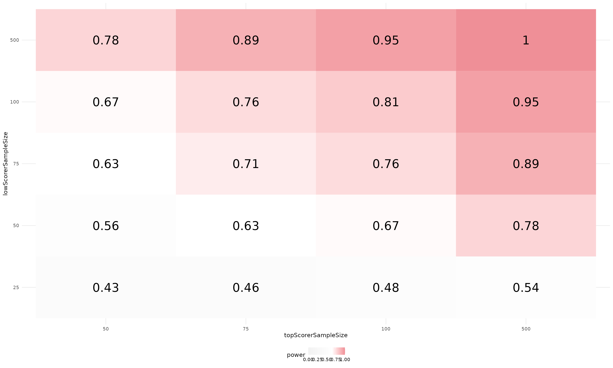
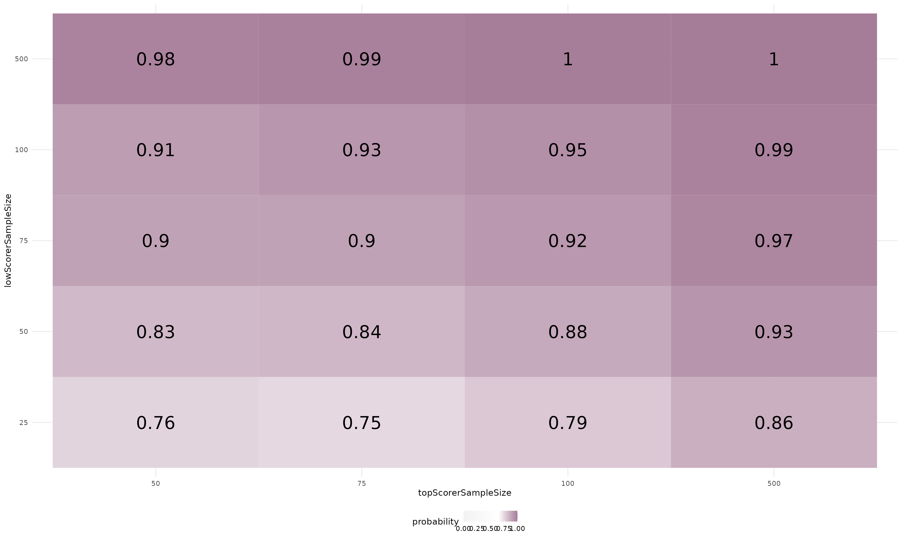

ABtesting.Rmd
library(abTestPower)
library(data.table)
library(glue)
library(ggplot2)
theme_set(
theme_minimal(
base_size = 14,
base_family = "sans") +
theme(strip.background = element_blank(),
legend.position = "bottom")
)We’ve recently developed a therapeutic target prediction tool which has been developed to identify pharmacological key proteins and prioritise therapeutic targets from a biological process represented in a directed network. The tool has been tested in-silico against a dataset of known therapeutic targets and is performing quite well. The details of the in-silico validation is outside the scope of this article but the main conclusions from this work are summarized below :
topScorerHitRate = 1/15
lowScorerhitRate = 1/150Although, the in-silico validation results are quite promising, we should run some experimental validation to be absolutely sure that the prediction tool is indeed identifying therapeutic targets at a better rate than what we would get by random chances. More precisely, we want to compare in an assay the top-scorer hit rate to the low-scorer hit rate. This is assuming that we already have an experimental assay set up and that we know exactly how to define a hit. The details of the experimental design is also outside the scope of this article. However, while designing the experimental validation we had to consider how to analyse the data after the assay had run. Comparing hit rates in this context would be the equivalent of running an A/B test which is widely used to compare 2 versions of a website by comparing their click-through-rate. There are two main ways of running such test: The Frequentist approach or the Bayesian approach. These are two different inferential statistical methods and there is a lot of debate over which is “The Best”. In this article we are assuming the reader knows the main differences between both methods and we simply want to show how these methods can be used and the consequences it has on the experimental design.
As for any experimental set up we need to determine the smallest sample size that is suitable to detect the difference of hit rates and avoid Type I (false positive) and Type II (false negative) errors. The more data points we have the better but experiments are very expensive to run and we need to try to keep cost as low as possible.
We can run the both approaches for multiple sample sizes and pick the best at the end :
topScorerSampleSize = c(50, 75, 100, 500)
names(topScorerSampleSize) = glue("sampleSize = {topScorerSampleSize}")
lowScorerSampleSize = c(25, 50, 75, 100, 500)
names(lowScorerSampleSize) = glue("sampleSize = {lowScorerSampleSize}")We know already that we can’t afford the cost of 500 data points in each sample but we are still curious to see the results with such large sample size.
The runFrequentistPower method runs a Frequentist power
analysis for 2 proportions on multiple sample sizes. It returns the
results as a tidy table which can be plotted using the plot
method.
powerTests <- runFrequentistPower(topScorerHitRate,
topScorerSampleSize,
lowScorerhitRate,
lowScorerSampleSize,
sig.level = 0.05,
alternative = "greater"
)The plot below shows the statistical power for each combination of sample size. We can easily see that only the largest sample size (500) reaches enough power (>=0.9). Therefore we can easily conclude that the experiment would most probably be too expensive if we were to use the Frequentist approach to analyse the data.
plot(powerTests, topScorerSampleSize, lowScorerSampleSize, power)
alpha = 2
beta = 33In this scenario, the binomial distribution describes our binary data (hit = TRUE or hit = FALSE). The prior represent the strength of our belief before we see the data and choosing a prior is an important aspect of Bayesian experimentation methods. We’re going to use the beta distribution to model our hit rate since it’s a good conjugate prior for binomial distribution. Remember that when we use beta distribution for a binary trial, the first shape represent the number of success while the second is the number of failure. Luckily for us a previous version of the prediction tool has been experimentally tested in our assay and we’ve found 2 targets out of 35 proteins tested.
numSteps = 1000
x = seq(0, 1, 1 / (numSteps - 1))
data.table(x = x,
y = dbeta(x,
shape1 = alpha,
shape2 = beta)
) |>
ggplot(aes(x = x, y = y)) +
geom_line() +
labs(x = "", y = "", title = glue("Beta probability density function for parameters : alpha = {alpha}, beta = {beta}"))
Power analysis doesn’t really apply to Bayesian statistics, however,
we still need to estimate the sample size in advance to be able to
perform the experiment without risking to not have enough data points to
detect whether the top-scorer hit rate is better than the low-scorer hit
rate. Running simulations of our experiment will help us to choose a
sensible required sample size for each group. The
runABbayesTest method has been designed to run Bayesian A/B
test on multiple simulated data randomly generated using the appropriate
distribution based on the top-scorer and low-scorer hit rates. The
method is also running for multiple sample sizes and returns the results
as a tidy table which can be plotted using the plot
method.
bayesABtests <- runABbayesTest(topScorerHitRate,
topScorerSampleSize,
lowScorerhitRate,
lowScorerSampleSize,
priors = c("alpha" = alpha, "beta" = beta),
distribution = "bernoulliC",
nSimulatedData = 100
)The plot below shows the probability of top-scorer hit rate to be better than low-scorer hit rate. It is very different than the plot showing the Frequentist power analysis results. Nevertheless, it is showing that using the Bayesian approach would allow us to reduce the sample size as low as 75 and still be able to detect the difference in hit rates with a probability >= 0.9.
plot(bayesABtests, topScorerSampleSize, lowScorerSampleSize, probability)
We’ve been able to show how to use the abTestPower R package to apply Frequentist and Bayesian approach to A/B testing. We shown that the Bayesian approach will allow us to reduce the sample size. The article can be used as a guide to perform the statistical analysis for when the results from the assay are delivered.